دليل الهوية البصرية
المرجع الموحّد لفريق التصميم والمطورين: الشعار ونسخه، الألوان، الخطوط، الأيقونات، العناصر الرسومية، وقواعد تطبيق هوية حفيظ على المطبوعات والزي والتغليف والواجهات الرقمية.
عن العلامة
حفيظ منصة تنسّق فائض الطعام بين قاعات المناسبات والجمعيات الخيرية، فيتحول ما يتبقى من الولائم إلى وجبات تصل لمن يحتاجها في الوقت المناسب وبشروط سلامة واضحة.
الوعد
لا يُهدر طعام صالح من مناسباتنا. كل كيلوغرام يُنقذ يُسجَّل ويصل بأمان.
الشخصية
موثوقة، دافئة، عملية، مجتمعية. تتحدث بهدوء وبأرقام واضحة، وتحترم كرم الضيافة.
الجمهور
مديرو القاعات ومنظمو المناسبات، الجمعيات الخيرية، المتطوعون الميدانيون، والجهات الداعمة.
الأسماء الرسمية
| العنصر | العربية | الإنجليزية |
|---|---|---|
| اسم العلامة | حفيظ | Hafez |
| الشعار اللفظي | من مناسباتنا إلى أثر مستدام | From Occasions to Impact |
| صيغة الاسمين معًا | Hafez | حفيظ — مع فاصل عمودي، ولا تُستخدم واو العطف بينهما. | |
تحليل الصورة المرجعية
بُنيت الهوية من لوحة الهوية المرجعية الموجودة في جذر المشروع («هوية حافظ_ من المناسبات إلى الأثر المستدام.png»، 1536×1024). قيست الألوان بأخذ وسيط البكسلات من كل منطقة، وقيست نسب الشعار بالبكسل. الجدول يفصل بين ما هو مؤكد وما هو مستنتج أو مصحّح.

ما يمكن إعادة إنتاجه بدقة
- رمز الورقتين والبذرة والبرعم: أُعيد رسمه متجهيًا ومطابقته فوق المرجع بالتراكب.
- الكلمة Hafez: تطابق Inter Bold (نسبة ارتفاع x إلى الحروف الكبيرة 0.75 مقيسة، وهي نسبة الخط نفسها).
- الشعار الإنجليزي أسفل الاسم بعرض الكلمة نفسه، بحروف كبيرة متباعدة.
- أسلوب الأيقونات الخطية، والبطاقات الفاتحة بزوايا مستديرة، والخط الذهبي القصير تحت العناوين.
| العنصر | ما ورد في المرجع | القيمة المعتمدة | الحالة |
|---|---|---|---|
| الأساسي | الملصق يقرأ #0F1132 (لون كحلي لا يطابق المربع الأخضر — نص مشوّه في الصورة) | #0E3524 — من وسيط بكسلات الشعار والمربعات الداكنة | مصحّح |
| الثانوي | #2E7DSA (حرف S بدل 5) | #2E7D5A — مطابق للبكسلات المقيسة #2F7555 تقريبًا | مصحّح |
| المميز | #A7C9S7 (غير مقروء) | #A7BB68 — من وسيط بكسلات المربع | مقيس |
| المحايد / الخلفية | #F4EDE1 / #FAFAF7 | #F4EDE1 / #FAFAF7 | مؤكد |
| ذهبي البذرة، زيتي البرعم | غير مذكورين في اللوحة | #D1AE74 / #5E793F — مقيسان من الرمز | مستنتج |
| الخطوط | Inter للإنجليزية، تجوال للعربية | كما هي | مؤكد |
| الشعار العربي | غير موجود في المرجع | صُمّم جديدًا بخط تجوال ExtraBold على نظام الشعار الإنجليزي نفسه | مستنتج |
| الرمز على الخلفية الداكنة | أوراق بيضاء وبذرة ذهبية، والبرعم غير ظاهر بوضوح | أبقينا البرعم بلون البرعم الأخضر حفاظًا على بنية الرمز الواحدة | قرار تصميمي |
| ألوان الحالات | شارات لوحة التحكم (أخضر، كهرماني، بنفسجي، وردي) | أُخذت الخلفيات من المرجع، وعُدّلت ألوان النص لتحقق تباين AA | مستنتج |
| الصور | صور مولّدة تحتوي نصوصًا مشوّهة | تُستخدم للاسترشاد بالأسلوب فقط، ولا تُنشر | تحذير |
الشعار ونسخه
يتكون الشعار من رمز (ورقتان تحتضنان بذرة ينبت منها برعم) واسم العلامة. جميع الملفات متجهية والنصوص فيها محوّلة إلى مسارات، فلا تحتاج أي خط مثبت.
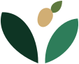
قراءة مقترحة للرمز
القراءة تفسير مقترح لاستخدامه في العروض، وليست جزءًا مذكورًا في المرجع.
النسخ المعتمدة
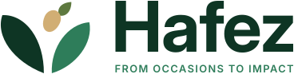
hafez-en-horizontalhafez-ar-horizontal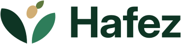
hafez-en-compact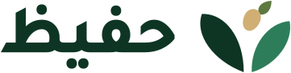
hafez-ar-compact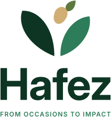
hafez-en-stacked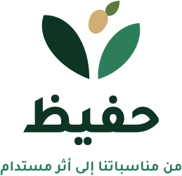
hafez-ar-stacked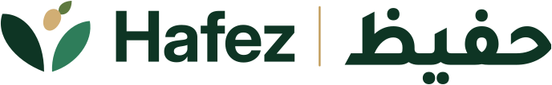
hafez-bi-horizontal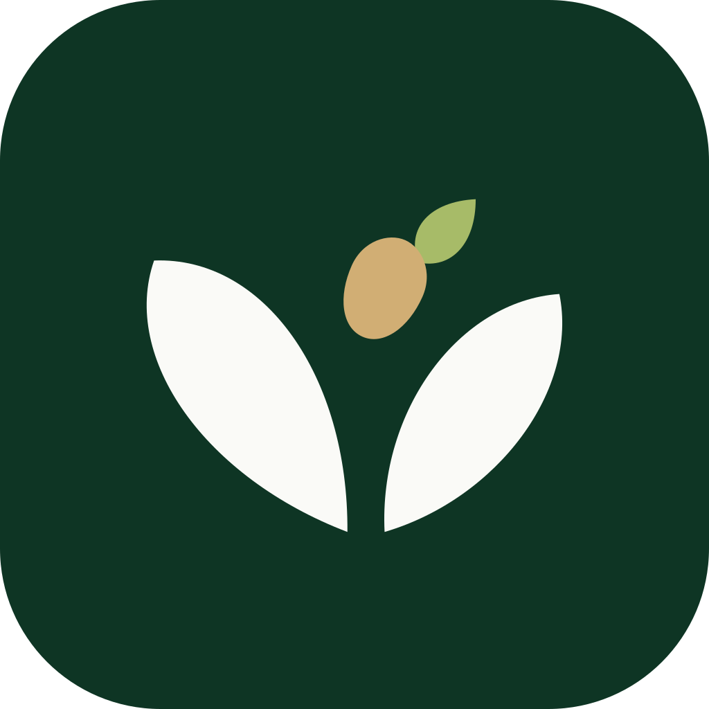
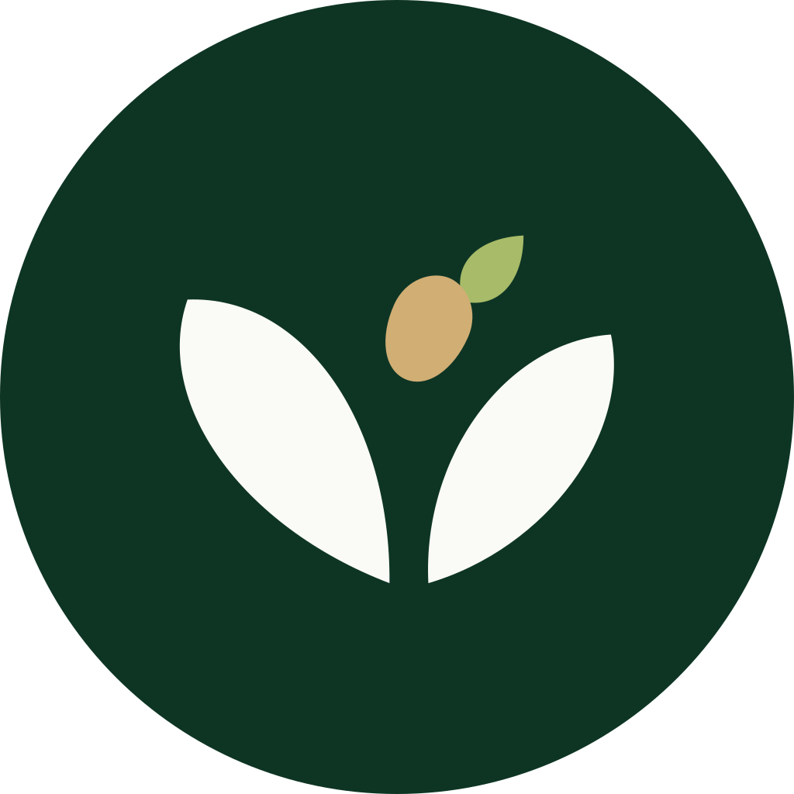
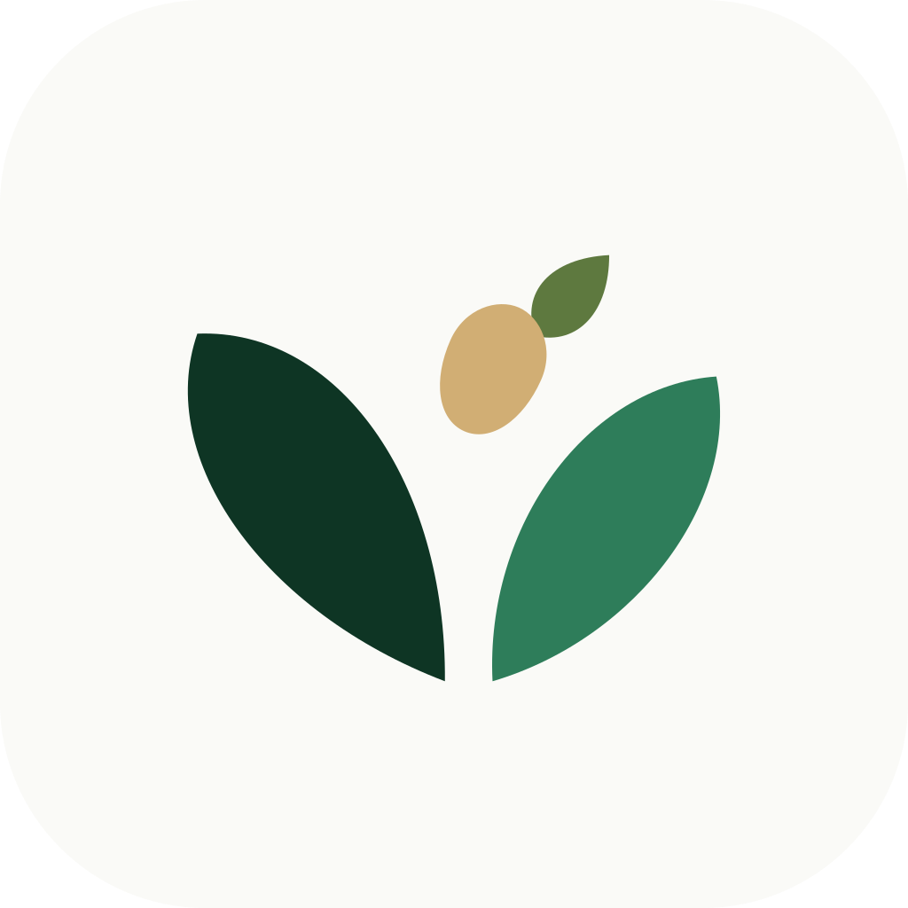
logo/app/متى تُستخدم كل نسخة
| النسخة | الاستخدام |
|---|---|
| الأفقي مع الشعار اللفظي | الأغلفة، الصفحة الرئيسية، العروض، المطبوعات الرسمية. الإنجليزي هو النسخة الأم؛ العربي للمواد الموجهة محليًا. |
| المدمج | رؤوس المواقع والتطبيقات، الزي، التوقيع البريدي، أي مساحة تقل فيها النسخة الأفقية عن 160px. |
| العمودي | المساحات المربعة: ظهر الزي، جانب الصناديق، الملصقات العمودية. |
| ثنائي اللغة | بطاقات التعريف، اللوحات الإرشادية في القاعات، المراسلات المشتركة مع الجهات. |
| الرمز وحده | أيقونة التطبيق، الصورة الشخصية في الحسابات، الأختام، الأنماط. يُستخدم وحده فقط حين يكون الاسم ظاهرًا في مكان قريب. |
ألوان الشعار والخلفيات
أربع نسخ لونية لكل صيغة. اختر النسخة حسب الخلفية، ولا تُعِد تلوين الشعار يدويًا.
-color
-reverse-mono-forest-mono-whiteالخلفيات المسموحة
| الخلفية | النسخة |
|---|---|
| الورقي، الأبيض، الرملي | ملوّن |
| الأخضر الغابي، الغابي 700 | معكوس |
| أخضر الورقة | أحادي أبيض |
| أخضر البرعم، الذهبي | أحادي غابي |
| صورة فوتوغرافية | معكوس على منطقة داكنة هادئة، أو داخل شريط غابي. لا يوضع على تفاصيل مزدحمة. |
المساحة المحيطة والأحجام الدنيا
وحدة القياس X هي ارتفاع البذرة في الرمز (نحو 30٪ من ارتفاع الرمز). يُترك حول الشعار مسافة لا تقل عن 1X من كل جهة، ولا يدخلها نص أو صورة أو حافة.
نسب البناء
- ارتفاع الرمز = 1.41 × ارتفاع الحرف الكبير H.
- المسافة بين الرمز والاسم = 0.5 × ارتفاع H.
- الشعار اللفظي الإنجليزي يمتد بعرض الاسم تمامًا، وخط قاعدته على مستوى أسفل الرمز.
- في النسخة العربية يقع الرمز يمين الاسم، ويُحاذى الشعار اللفظي إلى اليمين تحت الاسم.
- في العمودي: الرمز بتكبير 1.25 فوق الاسم، والمسافة بينهما 0.37 × ارتفاع H.
الأحجام الدنيا
| النسخة | رقمي (عرض) | طباعة (عرض) |
|---|---|---|
| أفقي مع الشعار اللفظي | 160px | 40mm |
| مدمج / ثنائي اللغة | 96px | 24mm |
| عمودي | 72px | 18mm |
| الرمز | 24px | 6mm |
الرمز المبسّط (بلا برعم) — hafez-symbol-small | 16 إلى 23px | أقل من 6mm |
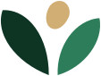
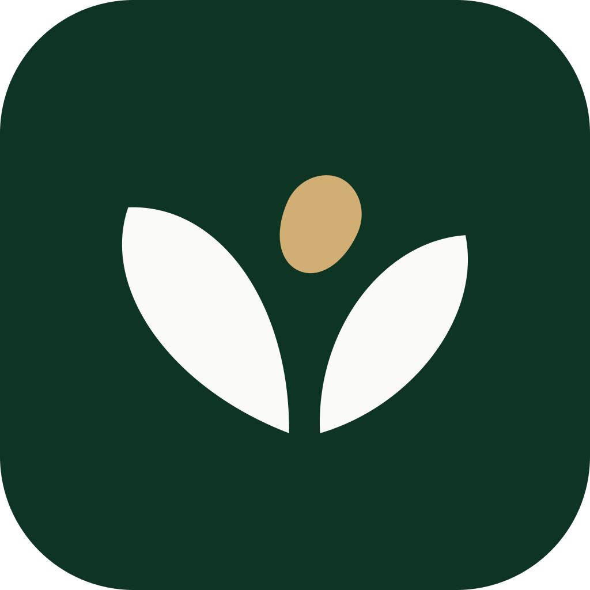
تحت 24px يُستخدم الرمز المبسّط: يُحذف البرعم وتكبر البذرة قليلًا حتى لا تتلاشى التفاصيل.
الاستخدامات الخاطئة
الأمثلة التالية ممنوعة. عند الحاجة لتعديل غير مذكور هنا، ارجع إلى فريق الهوية.
الاستخدام الصحيح
لوحة الألوان
خمسة ألوان أساسية من المرجع تحمل الهوية: أخضر غابي للثقة، أخضر الورقة للفعل، برعم فاتح للحيوية، ورملي وورقي للدفء والمساحة. اضغط على الكود لنسخه.
نسب الاستخدام التقريبية
الألوان الداعمة
#1A4432 سطح داكن مرتفع، حالة التمرير.#C39E5D فواصل زخرفية فقط.#5E793F البرعم في الرمز فقط.#1C2B24 النص الأساسي.#5D6B63 النص الثانوي.#E4DDD0 الحدود والفواصل.#E4EFE6 العنصر المحدد، خلفية الأيقونة.#FFFFFF البطاقات فوق الورقي.ألوان الحالات (للواجهات)
ألوان الحالات للمعلومات فقط، ولا تُستخدم في التسويق أو بدل ألوان الهوية.
التباين (WCAG 2.1)
| النص / الخلفية | النسبة | النتيجة |
|---|---|---|
| غابي على ورقي | 12.9:1 | AAA |
| حبر على ورقي | 14.1:1 | AAA |
| أخضر الورقة على ورقي | 4.8:1 | AA |
| أبيض على أخضر الورقة (الأزرار) | 5.0:1 | AA |
| رمادي مخضر على ورقي | 5.4:1 | AA |
| برعم على غابي | 6.4:1 | AA |
| ذهبي على غابي | 6.5:1 | AA |
| أخضر الورقة على رملي | 4.3:1 | نص كبير فقط (18.5px عريض أو 24px) |
| برعم على ورقي | 2.0:1 | ممنوع للنص |
| الخط الذهبي على ورقي | 2.4:1 | زخرفة فقط |
الخطوط
خطان مفتوحا المصدر (رخصة OFL) كما في المرجع: تجوال للعربية وInter للإنجليزية. كلاهما هندسي واضح، ويعمل جيدًا على الشاشات الصغيرة.
٠١٢٣٤٥٦٧٨٩ — 0123456789
0123456789 · kg · %
السلّم الطباعي
| المستوى | الحجم / السطر | الوزن | مثال |
|---|---|---|---|
| عنوان عرض | 56 / 64 | 800 · 700 | فائض اليوم |
| H1 | 40 / 50 | 800 · 700 | أثر يمكن قياسه |
| H2 | 32 / 42 | 700 | المناسبات القادمة |
| H3 | 24 / 34 | 700 | تفاصيل الاستلام |
| H4 | 20 / 30 | 700 · 600 | قاعة النخيل |
| نص كبير | 18 / 30 | 400 | نربط قاعات المناسبات بالجمعيات الخيرية. |
| نص أساسي | 16 / 27 | 400 | يُعبأ الطعام خلال ساعتين من انتهاء المناسبة. |
| صغير | 14 / 22 | 400 · 500 | آخر تحديث قبل 5 دقائق |
| تعليق | 12 / 18 | 500 | بيانات توضيحية |
| علوي لاتيني | 12 / 16 · +0.16em | 600 | From Occasions to Impact |
قواعد الكتابة
- تباعد الأسطر العربية 1.6–1.8، والإنجليزية 1.5.
- لا تُضاف مسافات بين الحروف العربية (letter-spacing) إطلاقًا، فهي تكسر الوصل.
- الحروف الكبيرة المتباعدة للإنجليزية فقط، في العناوين العلوية والشعار اللفظي.
- العناوين بالأخضر الغابي، والنص بالحبر، والثانوي بالرمادي المخضر.
- الأرقام: 0–9 (وليس ٠–٩) في الواجهات والجداول لتوحيدها مع البيانات، مع
tabular-nums. - الوحدات: «كجم» في النص العربي وkg داخل الأرقام في البطاقات المدمجة.
- عند المزج بين اللغتين في سطر واحد يبقى اتجاه الفقرة RTL وتُعزل الكلمة الإنجليزية.
- بدائل الويب:
IBM Plex Sans ArabicثمNoto Sans Arabicللعربية، وsystem-uiللإنجليزية.
الشعار اللفظي
لكل لغة صيغتها المعتمدة، ولا تُترجم إحداهما حرفيًا من الأخرى.
إلى أثر مستدام
to Impact
«من مناسباتنا إلى أثر مستدام» — الصيغة العربية الرسمية دون علامات إضافية.
«من مناسباتكم .. إلى أثر مستدام» — صيغة وردت في المرجع، وتُستبدل بالصيغة الرسمية.
«من المناسبات إلى التأثير» — ترجمة حرفية للإنجليزية.
عبارات داعمة من المرجع
للحملات والمنشورات.
للتطبيق والتنبيهات.
English campaigns.
الأيقونات
مجموعة خطية مرسومة خصيصًا على شبكة 24px بسمك خط 1.75 وأطراف مستديرة، وفق أسلوب المرجع. تأتي كملفات SVG منفصلة وملف رموز (sprite) واحد، ولونها يتبع currentColor.
eventshallscharitiespickupfood-surplusreportsreduce-wastecommunitypartnershipmealslocationtimeweightfood-safetytemperatureroutenotificationphonemailwebimpactالحاويات والألوان
- الأحجام: 20، 24 (الافتراضي)، 32، 48px. لا يتغير سمك الخط عند التكبير إلا في الأحجام فوق 48px (1.5).
- الحاوية: مربع 56px بزوايا 14px، بخلفية رملية أو نعناعية أو غابية.
- اللون: غابي على الفاتح، برعم أو ورقي على الداكن. لا تُستخدم الرموز التعبيرية (Emoji) بدل الأيقونات.
- أيقونة جديدة؟ ارسمها على الشبكة نفسها بخطوط وأقواس بسيطة، بلا تعبئة وبلا تفاصيل دقيقة.
العناصر الرسومية والزخارف
العناصر مشتقة من الرمز نفسه: شكل الورقة، البذرة، والخط الذهبي القصير. تُستخدم بهدوء لتدعم المحتوى لا لتنافسه.
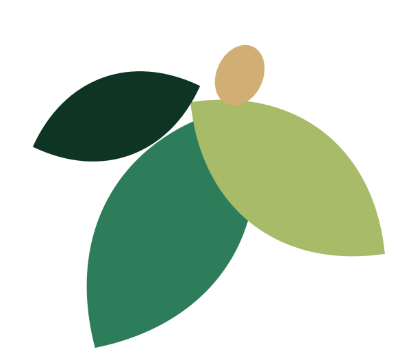
hafez-pattern-sand.svg للتغليف والخلفيات المطبوعة.hafez-pattern-forest.svg لبطانات الصناديق والأكياس.hafez-pattern-paper.svg للخلفيات الرقمية الهادئة.الزوايا والمساحات
10px للحقول، 14px للأزرار والأيقونات، 20px للبطاقات، 28px للأقسام الكبيرة، دائرية كاملة للشارات.
وحدة 4px، وأغلب المسافات من السلسلة 8، 16، 24، 32، 48، 64.
المحاذاة إلى اليمين في العربية وإلى اليسار في الإنجليزية. التوسيط للعناوين القصيرة والشعار العمودي فقط.
ناعمة جدًا بلون غابي شفاف. البطاقات الفاتحة تكتفي بحد رفيع غالبًا.
التصوير والتكوين البصري
صور دافئة وحقيقية من عمل حفيظ: الضيافة، الأيدي التي تسلّم الطعام، والمكان. الضوء ذهبي طبيعي والألوان تميل للرملي والأخضر.
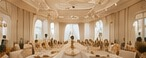
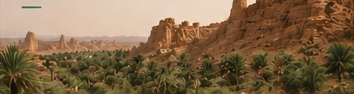
- إضاءة طبيعية دافئة، عمق ميدان خفيف، ألوان غير مشبعة.
- أظهر الطعام نظيفًا ومغلفًا ومحفوظًا بشكل آمن.
- احصل على موافقة مكتوبة قبل تصوير أي شخص، وخاصة المستفيدين.
- اترك مساحة هادئة لوضع العنوان أو الشعار (ثلث الإطار تقريبًا).
- صور المستفيدين بشكل يمس كرامتهم أو يكشف هويتهم.
- بقايا طعام مبعثرة أو أطباق متسخة أو حاويات قمامة.
- فلاتر قوية، ألوان باردة أو زرقاء، صور مخزون عامة لا تعكس المكان.
- صور مولدة بالذكاء الاصطناعي تُقدَّم على أنها توثيق حقيقي.
التكوين مع النص
- النص فوق الصورة يحتاج طبقة غابية بشفافية 70–80٪ أو شريطًا غابيًا جانبيًا كما في بطاقة «فائض اليوم» في المرجع.
- القص المفضل: 16:9 للبانرات، 4:5 للمنشورات، ودوائر أو أشكال أوراق مقصوصة للصفحة الرئيسية.
أمثلة تطبيقية
نماذج متجهية للتطبيق تتبع القواعد أعلاه. الأسماء وأرقام التواصل فيها توضيحية. الملفات في assets/mockups/ ونسخ PNG في assets/previews/.
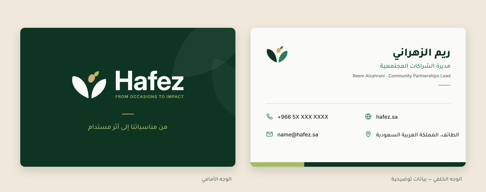
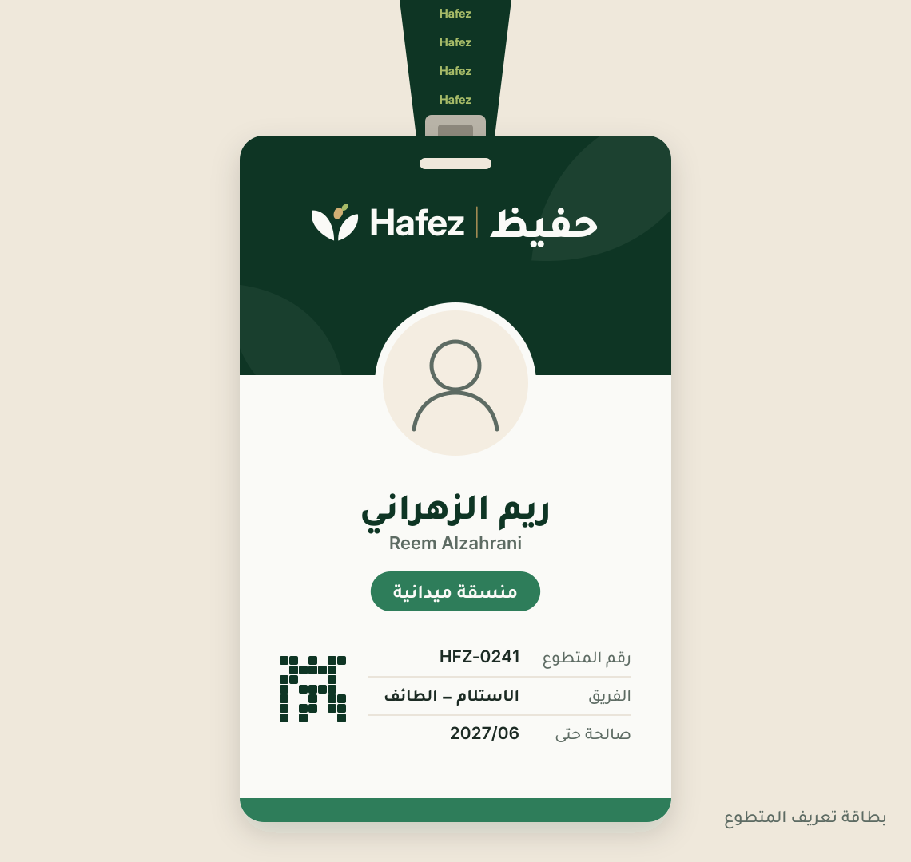
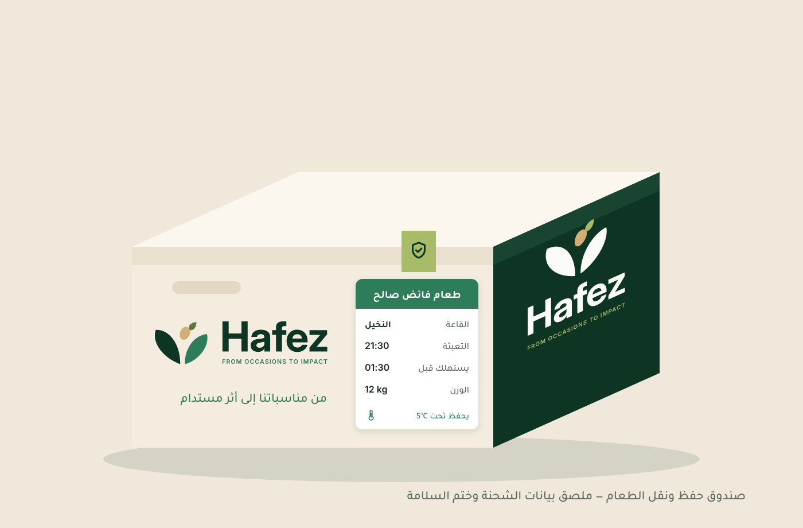
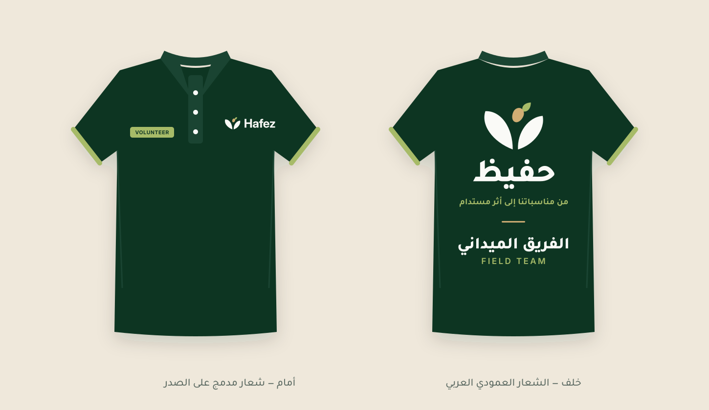
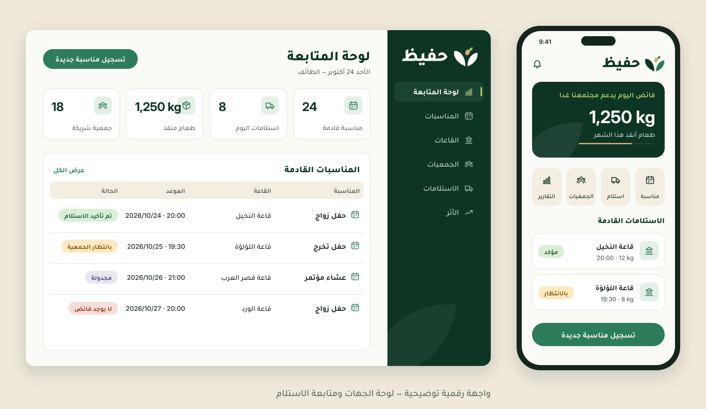
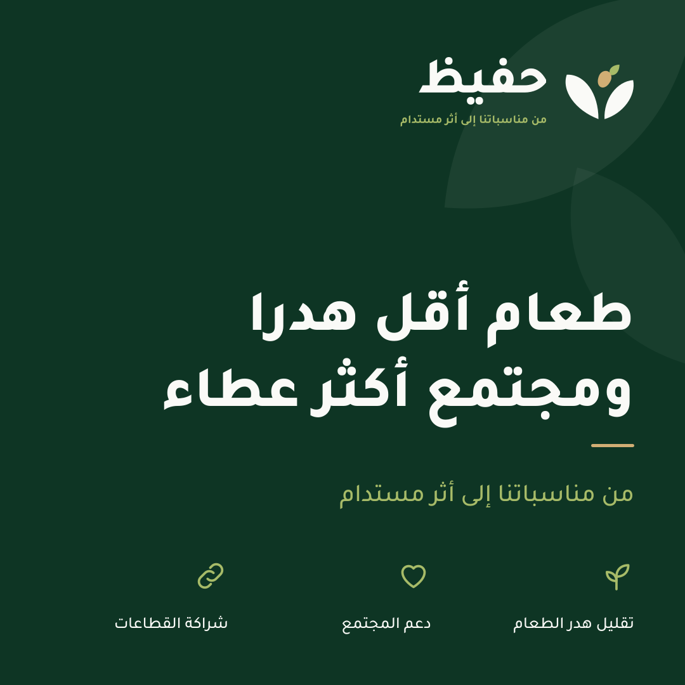
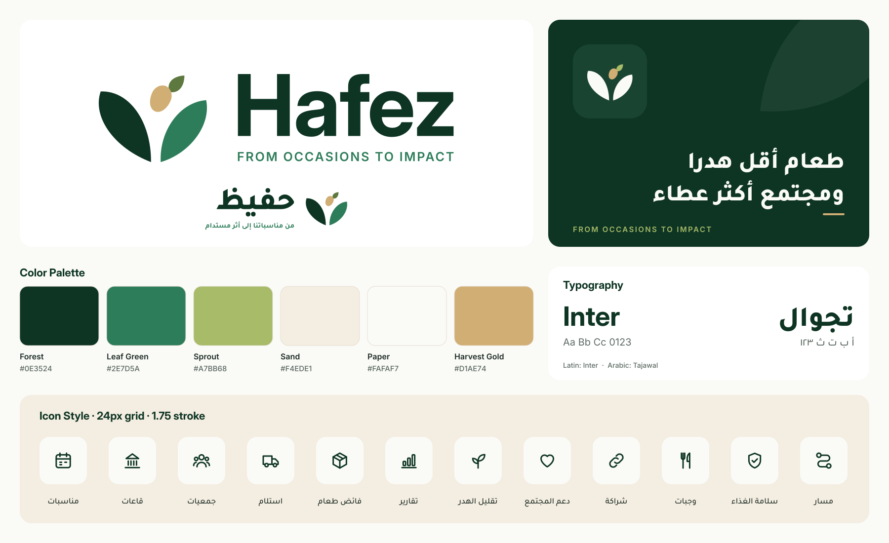
assets/board/ بصيغتي SVG وPNG.للمطورين
كل القيم موجودة كمتغيرات CSS وملف JSON. استخدم ملفات SVG للشعار في الويب، وPNG فقط حيث لا تدعم المنصة SVG.
بنية المجلد
brand/ ├─ brand-guidelines.html ← this guide ├─ BRAND-SYSTEM.md ← colours, type, rules (text) └─ assets/ ├─ logo/ ← SVG masters (text outlined) │ ├─ symbol/ symbol + small-size symbol │ ├─ en/ ar/ bilingual/ horizontal · compact · stacked │ └─ app/ app icon · avatar · favicon ├─ png/ ← transparent PNG exports, favicon.ico ├─ icons/ ← 21 SVG icons + sprite + index ├─ patterns/ ← leaf patterns & graphics ├─ tokens/ ← hafez-tokens.css / .json ├─ fonts/ ← Inter, Tajawal (OFL) ├─ mockups/ ← application mockups (SVG) ├─ previews/ ← mockup PNG previews ├─ board/ ← final brand board └─ reference/ ← mood crops from the reference
تسمية الملفات: hafez-{lang}-{layout}-{scheme}.svg حيث scheme أحد color، reverse، mono-forest، mono-white.
الاستخدام
<link rel="stylesheet" href="brand/assets/tokens/hafez-tokens.css">
body {
background: var(--hz-bg);
color: var(--hz-text);
font-family: var(--hz-font-ar);
}
.btn-primary {
background: var(--hz-action);
color: var(--hz-white);
border-radius: var(--hz-radius-md);
}
<!-- logo -->
<img src="brand/assets/logo/ar/hafez-ar-compact-color.svg"
alt="حفيظ" height="40">
<!-- icon from the sprite (colour = currentColor) -->
<svg width="24" height="24">
<use href="hafez-icons-sprite.svg#hz-pickup"/>
</svg>
<link rel="icon" href="brand/assets/png/app/favicon.ico">
<link rel="apple-touch-icon"
href="brand/assets/png/app/apple-touch-icon-180.png">